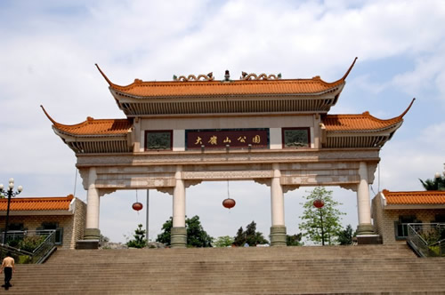
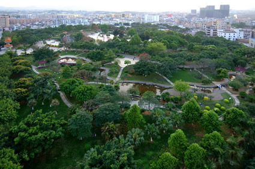

近年来，大岭山镇利用良好的区位、交通和生态优势，不断加大投入完善城市配套设施建设，大力发展第三产业尤其是房地产业，城市功能不断完善，居住环境不断成熟，城市形象不断提升，成为一个环境优美、生态良好、配套完善的生态宜居城镇。
——大岭山区位交通优势明显。大岭山镇是东莞唯一一个同时与东莞城区、深圳市区接壤的镇，毗邻东莞大市区、松山湖和深圳北部，能较好地承接城区和深圳辐射，同时实现与松山湖的产业互补，将极大地带动我镇第二、三产业快速发展。镇内交通十分发达，。107国道、石大路、厚大路、连马路横贯全镇，广深珠高速、莞深高速、常虎高速、龙大高速均在我镇内（旁）设有出口，市城市轻轨通过我镇，距东莞火车站、虎门港、宝安机场只有30分钟的路程。
——大岭山城市配套日益完善。大岭山镇将环境建设作为新一轮发展的生命线，全面加快设施建设，提高城市的成熟度。镇内，大岭山医院、中心幼儿园、大岭山医院、大岭山屠场等已投入使用，东纵路、拥军路和镇中心区主干道路已完成升级改造，大岭山体育公园、大岭山公园等一系列文体设施已基本完成，图书馆、村级公园等一批设施正在加快推进，供电、供水、供气、污水处理等设施日益完善。
大岭山广场上的舞姿
大岭山休闲生活丰富多彩。除了现有的大岭山公园、广场、华润万家、沃尔玛等公共场所之外，镇内新建了体育公园、图书馆等全新设施：
——大岭山体育公园。大岭山综合体育公园位于大岭山大道与建设路交叉口东南侧，西至大岭山大道，北临建设路，占地面积15.4公顷，总投资金额为5400万元。园内规划建有2个标准游泳池、6个篮球场、6个网球场、1个人造草坪足球场和1个多功能室内体育馆，于2010年春节前投入使用。公园建成后，成为群众休闲、健身、娱乐的综合活动场所和大岭山镇新城市中心区的标志性公园。
——新图书馆建设工程。大岭山新图书馆工程选址位于镇中心区，地处广发路、南二路交界处东南角，西北侧为大岭山镇人民政府，西南侧为帝京国际酒店，占地面积16260.2平方米，建筑面积39884.1平方米，框架结构为地上5层、地下1层，总投资约1.2亿元。图书馆将是纸质图书与数字图书紧密结合的新一代图书馆，是集图书、展览、培训、信息、网络、智能化于一体的新型现代化复合式图书馆。馆内设有图书文化展示场地、各类阅览室、报告厅、多功能展示大厅、社会培训及活动室、书店、咖啡厅、多媒体活动室等功能分区。新图书馆计划藏书20—25万册，其中公共书籍15—20万册，家具专业书籍5万册，将成为国内镇级最具规模的图书馆，也将成为“中国家具图书馆”，实现公共图书馆与专业科研图书馆的有机结合，为大岭山家具产业集群提供家具专业知识的教学信息资源服务。目前，大岭山新图书馆工程正顺利动工建设，预计今年年底完成土建主体工程建设。新图书馆的建成，不仅为广大企业、群众提供一个学习、培训、会议展览等活动的场所，对于完善我镇的城市功能、提升我镇的城市品位也有着非常重要的意义。

大岭山公园前门

大岭山公园全景